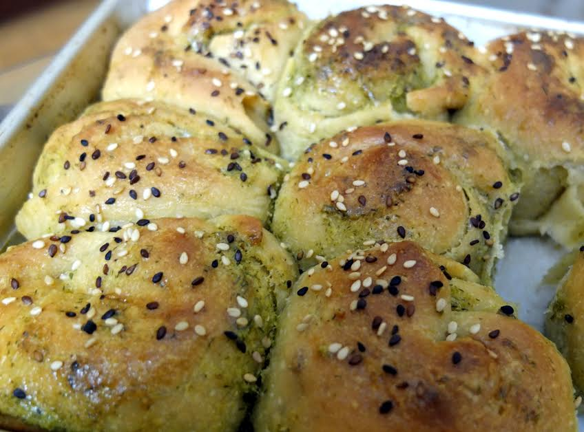

Fennel Pesto Pull-Apart Bread

Description
Fennel Pesto Pull-Apart Bread is a homemade fennel pesto layered bread recipe baked in the circular shape. Fennel Pesto is similar to conventional basil pesto but instead of basil leaves fresh fennel is used to make this pesto. This bread recipe is easy to prepare if a batch of fennel pesto is ready and stored in the fridge. Fennel Pesto Pull-Apart Bread is a great recipe idea for the tea-time snack party or it can packed for the kids school snack box as well.
Ingredients
- 1-1/2 cups All Purpose Flour (Maida)
- 1-1/2 cups Whole Wheat Flour
- 1/4 cup milk powder
- 1/4 cup milk powder
- 4 tablespoons extra virgin olive oil
- 1 Potato, boiled and mashed
- 3 tablespoons honey
- Salt, to taste
- 2-1/2 teaspoons Active dry yeast
- 1-1/8 cup lukewarm water
- 1 tablespoon sesame seeds (Til seeds)
Ingredients for the fennel pesto
- 1/4 cup walnuts, or pine nuts
- Fennel leaves, half a bunch
- 50 gram Cheddar Cheese
- 1/4 cup extra virgin olive oil
- 4-5 cloves garlic
- Lemon Juice, of 1 lemon
- Lemon zest, of half a lemon
- Salt and pepper, to taste
Steps
- To begin making Fennel Pesto Pull-Apart Bread first make fennel pesto, dry roast the pine nuts in a skillet over low heat until brown spots appear on them. Roast the chopped fennel leaves and garlic for a minute or so.
- Transfer all the ingredients to a mixer along with olive oil, cheese, salt, pepper, zest, lemon juice and grind to a smooth paste. Transfer to a bowl or store up to 2 weeks in the fridge.
- To prepare the dough for the bread, dissolve the instant yeast in lukewarm water. In a mixing bowl, combine the dissolved yeast along with flour, milk powder, mashed potato and honey.
- Knead everything together to get a smooth dough by hand or using a stand mixer.
- Sprinkle the salt, olive oil and continue to knead. If you are using a stand mixer continue for about 7-10 minutes in low speed.
- Place the dough in a lightly greased bowl. Cling wrap the bowl and allow the dough to rise at room temperature till it is nearly doubled in size, around 1 hour. Lightly grease a 12-inch round cake pan.
- Once the dough has doubled in volume, transfer the dough to a lightly greased platform and gently deflate the dough. Roll out the dough into a large rectangular shaped sheet.
- Spread the fennel pesto over the rolled out dough sheet. Now start rolling the dough sheet from one side to form a cylindrical shaped swiss roll like shape.
- Place the rolls in the round cake pan, spacing them evenly with some gap allowing room for the dough to rise. Cover the pan with
- Next cut even size circles from the round cylindrical roll. Arrange the rolls in the greased round cake pan, spacing them evenly with some gap in between allowing room for the dough to rise.
- Cover the pan with a lightly greased plastic wrap, and allow the rolls to rise till they are double in size. This process will take near about 1 hour. While the rolls are rising, preheat the oven to 190°C.
- The rolls are ready to be baked. Give it an egg wash or milk wash and sprinkle sesame seeds.
- Bake the rolls until they’re a deep golden brown on top, and lighter on the sides, about 25 to 35 minutes.
- Remove the rolls from the oven, brush with olive oil and carefully transfer to wire rack. Brush with more pesto sauce just before serving.